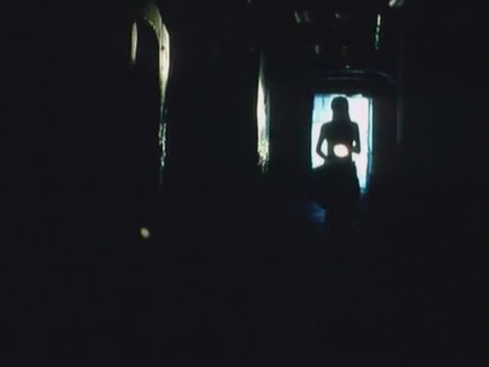
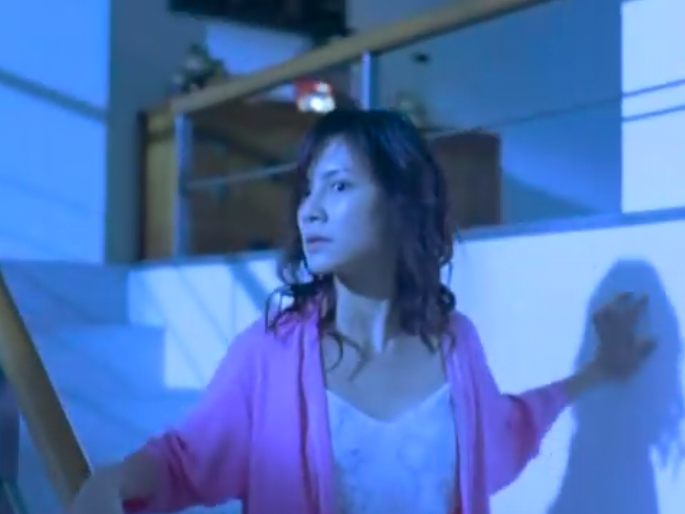
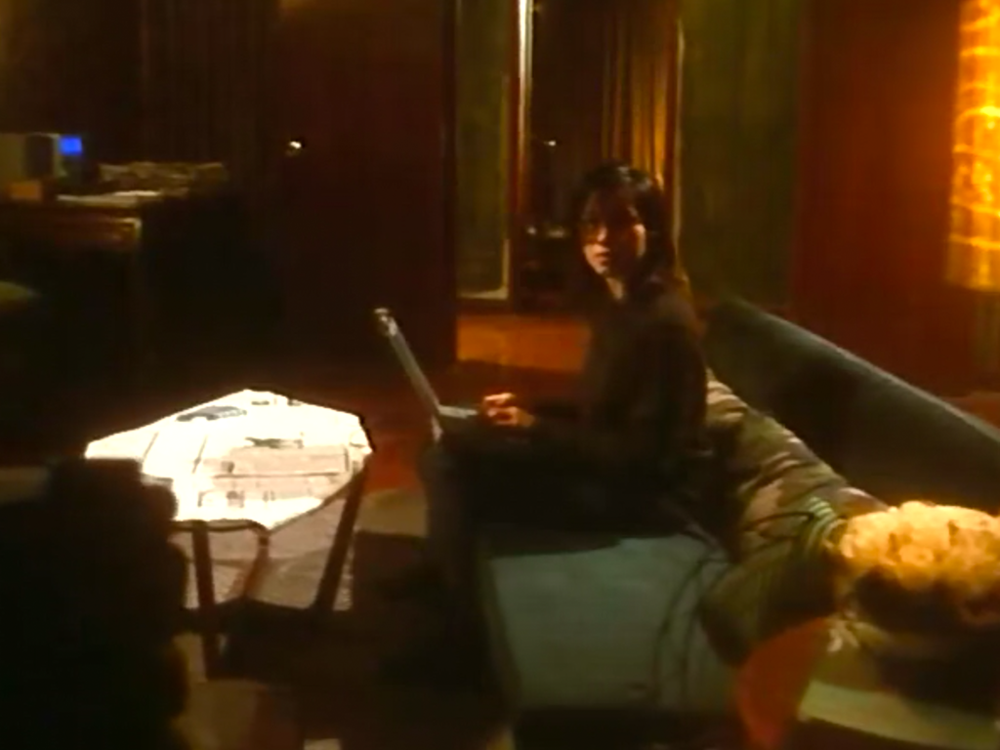
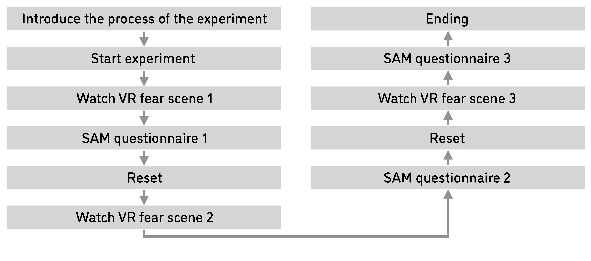
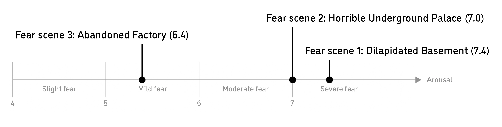

Design of Virtual Reality Scenes with Variable Levels of Fear Evocation
Group project of Dan Liao, Yanping Huang and Zhizhen (Jerry) Tan, 2017.
In this study we set up a systematic approach for the design of emotion evocative VR scenes, using fear as an example. In conclusion, we have built up a series of fear evocative VR scenes, which can induce different levels of fear with high effectiveness of fear elicitation in the VR environment.
The corresponding paper, Virtual Reality Scenes with Variable Levels of Fear Elicitation, are published and presented on the HCI International 2018, Las Vegas.
Keywords: Virtual Reality, Scenes Design, Fear Evocation.
Fear and Emotion Evocation
Many scholars have different definitions of fear. Overall, fear is one of the basic emotions of human which are comprehensive representations of human psychology and consciousness.
The evocation of emotion has been applied to many areas including diagnosis of mental illness, mental health assessment [1], cognitive science research [2], game design [3]. Emotional evocation can also be used as a tool to enhance user experience in design process [4].
Existent Ways To Induce Fear And Other Emotions In The Laboratory:
At present there are several ways to induce different emotions in the laboratory, each of which have significant limitations.
- Visual stimuli
- Examples: The International Affective Picture System(IAPS)[5] and the Chinese Affective Picture System(CAPS)[6].
- Limitations: Single channel stimuli with low ecological effect
- Examples: The International Affective Picture System(IAPS)[5] and the Chinese Affective Picture System(CAPS)[6].
- Auditory stimuli
- Examples: The International Affective Digital Sounds(IADS)[7] and the Chinese Affective Digital Sounds(CADS)[8].
- Limitations: Single channel stimuli with low ecological effect
- Examples: The International Affective Digital Sounds(IADS)[7] and the Chinese Affective Digital Sounds(CADS)[8].
- Video stimuli
- Examples: Movie clips based on the study of Gross and Levenson[9] and the Chinese Emotional Visual Stimulus(CEVS)[10].
- Limitations: Related material is limited in quantity and the generated fear level is not clear.
- Examples: Movie clips based on the study of Gross and Levenson[9] and the Chinese Emotional Visual Stimulus(CEVS)[10].
- Olfactory stimuli
- Examples: The Consumer Fragrance Thesaurus[11].
- Limitations: Single channel stimuli with low ecological effect.
- Examples: The Consumer Fragrance Thesaurus[11].
- Imagination stimuli
- Examples: The Affective Norms for English Words(ANEW)[12] and the Affective Norms for English Text(ANET)[13].
- Limitations: Greatly influenced by individual’s imagination ability.
- Examples: The Affective Norms for English Words(ANEW)[12] and the Affective Norms for English Text(ANET)[13].
- Expression stimuli
- Subjects are instructed to control their own facial muscles, making their facial expressions consistent with the reference facial expressions reflecting the target emotions, thereby inducing the target emotions[14].
- Limitations: Greatly affected once the subjects know the purpose of the experiment.
- Subjects are instructed to control their own facial muscles, making their facial expressions consistent with the reference facial expressions reflecting the target emotions, thereby inducing the target emotions[14].
- Situation stimuli
- Induce emotions by placing the subjects in a simulated or real life situation[15].
- Limitations: Demand the subjects have some performance skills, and it is not easy to take the sample.
- Induce emotions by placing the subjects in a simulated or real life situation[15].
Design Goal:
VR is a potential technology to solve problems like inefficient emotion elicitation and high susceptibility to ambient interferences by providing immersive and realistic experience in terms of emotion elicitation. Therefore, we analyzed the design elements from existing materials which can evoke fear, and then built up a series of fear evocative VR scenes, which can evoke different levels of fear with improved efficiency of elicitation.
In short, we set up a systematic approach for the design of emotion evocative VR scenes, using fear as an example.
We try to build up three fear evocative VR scenes that can induce different levels of fear with high effectiveness of fear elicitation in the VR environment, two of which can induce severe fear and one of which can induce moderate fear.
Method Of Emotion Measurement:
The Self- Assessment Manikin (SAM) [16] is a non-verbal pictorial assessment technique that directly measures the valence, arousal, and dominance associated with a person's affective reaction to a wide variety of stimuli. In this paper, we defined fear as the emotion with valence of no more than 4 and arousal greater than 4. And the level of fear could be further classified as 4 classes based on the value of arousal: slight fear (4-5), mild fear (5-6), moderate fear (6-7) and severe fear (>7).
Design Process Step 1: Feature Extraction Of Critical Element For Fear Evocation:
VR technology is a combination of visual media and audio media. Therefore, we analyzed and extracted fear evocative elements from emotional evoked material libraries which can provide visual stimuli, auditory stimuli and video stimuli.
- Step 1-1: Fear feature analysis of IAPS
With the classification above, we analyzed the features of the elements in IAPS pictures of each class of fear from three aspects: attributes, semantic features and expressive features.
Attribute is the nature of the element; for instance, a decaying corpse and a skull share the same attribute of human body. Semanteme refers to the meaning of the element; for instance, a decaying corpse means a horrible death and a sharp knife means hurt. Expression means the morphological character of the element; for instance, a decaying corpse is designed to be twisted and incomplete.
WARNING: PICTURES IN THE FOLLOWING TABLES MIGHT CAUSE YOUR DISCOMFORT. CLICK TO REMOVE THE MOSAIC REVERSIBLY.Level of arousal Sample Attribute Semanteme Expression Severe fear (>7) 
Severely bloody, deformed human body. Horrible death, Extremely, Severe hurt. Blood red, incompleteness, deformity. Moderate fear (6-7) 
Bloody or deformed human body; aggressive animal; lethal weapon or tool; severe catastrophe. Horrible death, Extremely, Severe hurt. Blood red, incompleteness, deformity. Mild fear (5-6) 
Wounded human body, mummification; wounding weapon or tool; catastrophe. Hurt, pain. Abnormality. Slight fear (4-5) 
Skull; graveyard; disgusting animal. Death, plague, dinginess. Low saturation, color, chaos.
- Step 1-2: Fear feature analysis of CADS
In the establishment of CADS, Liu [17] sums up the sound materials into 6 categories: surprise, neutrality, activation, pleasure, disgust and fear. We analyzed the sound materials of type of fear. According to the sources of the sounds, we divided these voices into the sound of role and the sound of environment.
- The sound of role: the sound is mainly made by the narrative subjects itself with clear meanings.
Level of arousal Attributes Semanteme Expression Severe fear (>7) Heartrending scream and moan, sound of hitting human body. Torture, pain, hurt. Sudden and intermittent voice, sharp yell. Moderate fear (6-7) Moan and wail, weird sound made by human. Sorrow and unluckiness, unknown and abnormal situation. Trembling faint voice, fierce cry and wail. - The sound of environment: the sound is mainly made by the narrative subjects itself with clear meanings.
Level of arousal Attributes Semanteme Expression Severe fear (>7) Alarm, sound of accident. Severe diaster. Sudden and intermittent voice. Moderate fear (6-7) Alarm, sound of dangerous object. Danger, disaster. Sharp and hasty sound. Mild fear (5-6) Sound of dangerous object. Danger. Sudden sharp sound.
- The sound of role: the sound is mainly made by the narrative subjects itself with clear meanings.
- Step 1-3: Fear feature analysis of CEVS and other horror films and video clips
The Chinese Affective Video System (CEVS) [18] contains 30 film clips, which can induce six emotions including anger, fear, sadness, happiness, disgust and neutrality. There are five film clips which could induce fear. We also analyzed a number of horror films and television works.
We analyzed the feature elements in the following aspects: role design, scene design, rhythm design and plot design.Design aspect Sample Attribute Semanteme Expression Character design 
The symbol of abnormal death, such as deformed body. Abnormal death, undead retaliation. Bloody body, pale body, twisted and incomplete body. Scene design  Sealed space, endless space, dusky space. Loneliness， helplessness, confinement, unknown. Colors of cold hue and low saturation; cold and hard material. Rhythm design  Fast, slow, alternating rhythm. Nervous, perturbed, calm, complicated. Rhythm alternating, the horror scenes are usually set after a person feels safe. Plot design  Escape, mystery, numinous phenomena. Unknown, precarious, creepy. Escape, suspense, confrontation, break taboos.
- Step 1-4: Summary of fear feature analysis
Based on above mentioned analysis, we found that the fear features of different levels can be clearly distinguished and regularities of gradual change exists. This features and regularities can be used as a rationale for further design of VR fear provoked scenarios that can evoke different levels of fear.
Scenes Description:
| NO. | 1 |
| Name | Dilapidated Basement |
| Scene element | Basement Zombies, residual limbs, a broken stair, construction rubbishes. |
| Color | Black, red, green. |
| Lighting effect | Low brightness. |
| Dynamic effect | Crawl forward, capture. |
| Plot | Chase and escape. |
| Rhythm | An alternating rhythm. |
| Sound | Cries of a girl, Soprano singing, roars of monsters. |
| Sound effect | Asymptotically increasing. |
| Camera perspective | Low height. |
| NO. | 2 |
| Name | Horrible Underground Palace |
| Scene element | Palace zombies, skulls, a bat, torches, snakes. |
| Color | Brown, grey, red, blue. |
| Lighting effect | Medium brightness. |
| Dynamic effect | Creep and attack. |
| Plot | Guide and observe. |
| Rhythm | An alternating rhythm. |
| Sound | Sound of water, sound of zombies. |
| Sound effect | Surrounding sound. |
| Camera perspective | Normal height. |
| NO. | 3 |
| Name | Abandoned Factory |
| Scene element | Factory, centipedes, mosquitoes, black bugs, construction rubbishes. |
| Color | Green, grey. |
| Lighting effect | High brightness. |
| Dynamic effect | Creep and attack. |
| Plot | Guide and observe. |
| Rhythm | An smooth rhythm. |
| Sound | Sound of insects. |
| Sound effect | Asymptotically increasing. |
| Camera perspective | Low height. |
Design Process Step 3: Evaluation Of Designed Fear VR Scenes By Self- Assessment Manikin (SAM):
- Experiment flow

-
Results
NO. Scene Mean score of valence Mean score of arousal Mean score of dominance 1 Dilapidated Basement 2.6 7.4 4.2 2 Horrible Underground Palace 2.7 7.0 5.0 3 Abandoned Factory 3.1 6.4 5.0

Conclusion:
The experimental result above shows that the designed fear VR scenes can evoke different levels of fear and reveals that our design approach is effective, which can be used as guideline principles for designing more fear scenes or other types of emotional scenes.
Limitation:
- The current method is to empirically select elements from the design reference, merge them to be scenes and then test the designed scenes using SAM to get the precise fear evocative level of the scenes.
- The effects of the combinations of the elements cannot be effectively controlled and predicted in advance. For the time being, we have no algorithm that can calculate the fear evocative level of the scenes directly, resulting in low production efficiency.
- There is no direct evidence to show proof that the VR fear evocative scenes have higher ecological effect than traditional visual fear stimuli
Reflection:
In the future work report of the project, I mentioned that we should develop a machine learning algorithm to analyze the pictures in IAPS more accurately. A new idea came to me that perhaps in this way, we can make the machine understand the human feeling.
References:
- 1. Young, M. E., Bemak, F.: The Role of Emotional Arousal and Expression in Mental Health Counseling. [J]. Journal of Mental Health Counseling, 18 (1996).
- 2. Salterspedneault, K.,Gentes,E., Roemer,L.:The role of fear of emotion in distress, arousal, and cognitive interference following an emotional stimulus. [J]. Cogn Behav Ther 36(1):12-22 (2007).
- 3. Ravaja, N., Salminen, M., Holopainen, J., et al.: Emotional response patterns and sense of presence during video games: potential criterion variables for game design. [C]. Nordic Conference on Human-Computer Interaction volume(issue):339-347 (2004).
- 4. Piqueras-Fiszman, B., Jaeger,S.R.:The impact of the means of context evocation on consumers’ emotion associations towards eating occasions. [J]. Food Quality and Preference 37(37):61-70 (2014).
- 5. Center for the Study of Emotion and Attention (CSEA-NIMH).: The International Affective Picture System: Digitized Photographs, Center for Research in Psychophysiology. Univ. of Florida (1995).
- 6. Bai L., Ma H., Huang Y.X., Luo Y.J.: The Development of Native Chinese Affective Picture System--A pretest in 46 College Students. [J]. Chinese Mental Health Journal 19(11)，719-722 (2005). (in Chinese)
- 7. Bradley, M. M., Lang, P. J.: The International Affective Digitized Sounds Affective Rat- ings of Sounds and Instruction Manual. [J]. University of Florida (2007).
- 8. Liu T.S., Luo Y.J., Ma H., et al.: The compilation and evaluation of localized emotional sound library. [J]. Psychosocial Science 29 (2), 406-408 (2006). (in Chinese)
- 9. James, J., Gross, Robert, W. Levenson.: Emotion elicitation using films. Cognition and Emotion 9(1), 87-108 (1995).
- 10. Xu P.F, Huang Y.X., Luo Y.J..: Preliminary compilation and evaluation of Chinese emo- tional image materials library. [J]. Chinese Journal of Mental Health 24(7), 551-554 (2010). (in Chinese)
- 11. Warrenburg, S.: Measurement of Emotion in Olfactory Research. [J]. Acs Symposium 825, 243-260 (2002).
- 12. Bradley, M. M., Lang, P. J.: Affective Norms for English Words (ANEW): Instruction Manual and Affective Ratings. [J]. Journal Royal Microscopical Society 88(1), 630-634 (1999).
- 13. Bradley, M. M., Lang, P. J.: Affective norms for English Text (ANET): Affective ratings of text and instruction manual. Technical Report D1 University of Florida, 1-25 (2007).
- 14. Xin, W., Jingna, J., Li, S., et al.: Study on the early metaphase component difference of ERP induced by scene situation and facial expression picture. [J]. Chinese Journal of Bio- medical Engineering 34(3), 257-263 (2015). (in Chinese)
- 15. Siemer, M., Mauss, I., Gross, J.: Same situation--Different emotions: How appraisals shape our emotions. [J]. Emotion 7(3), 592 (2007).
- 16. Bradley, M. M, Lang, P. J.: Measuring emotion: the Self-Assessment Manikin and the Se- mantic Differential. [J]. Journal of Behavior Therapy & Experimental Psychiatry 25(1), 49 (1994).
- 17. Liu T.S., Luo Y.J., Ma H., et al.: The compilation and evaluation of localized emotional sound library. [J]. Psychosocial Science 29 (2), 406-408 (2006). (in Chinese)
- 18. Xu P.F, Huang Y.X., Luo Y.J..: Preliminary compilation and evaluation of Chinese emotional image materials library. [J]. Chinese Journal of Mental Health 24(7) 551-554 (2010). (in Chinese)